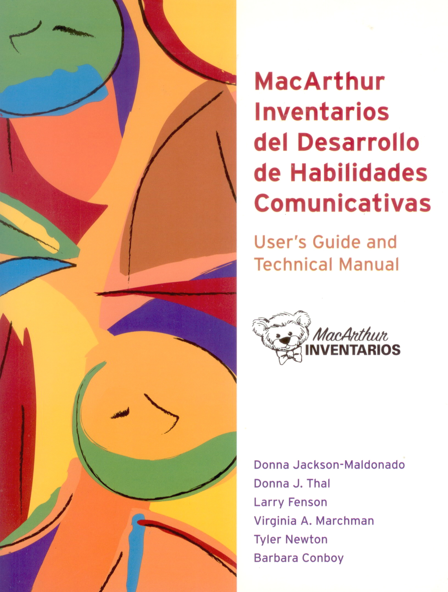
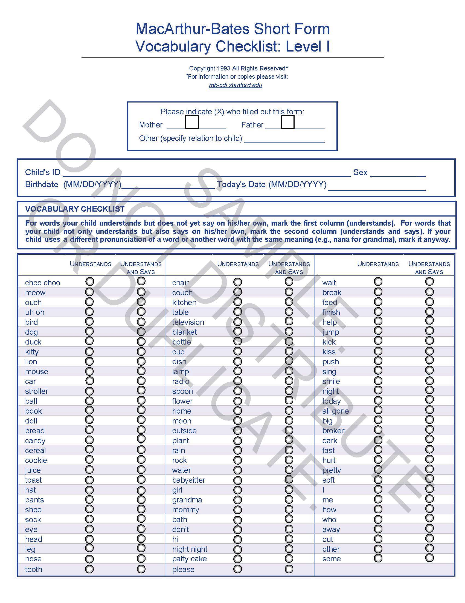
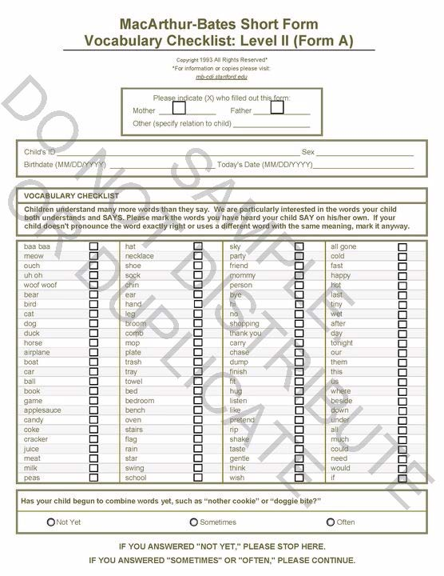

The MacArthur-Bates CDIs are parent report instruments appropriate for children learning English and/or Spanish. They are available in the original long forms, as well as in several short forms. Your choice of long vs. short forms will depend on your particular application and research or clinical questions. Click on the choices on the left to learn more about each option. We strongly advise that users refer to the manuals (Fenson et al., 2007; Jackson-Maldonado et al., 2003) for more information, available from Brookes Publishing, www.brookespublishing.com/cdi
One page short form versions of the English-language CDI instruments are available. The Words & Gestures short form (Level I) is comprised of a 89-word vocabulary checklist with separate columns for comprehension and production, appropriate for children 8-18 months. Two equivalent Words & Sentences versions (Level IIA and Level IIB) contain a 100-word productive vocabulary checklist and a question about combining words. These forms are appropriate for children 16-30 months. The short forms can serve as an alternative to the full versions when rapid assessment of a child's language level is needed or when parental literacy is low.
They may be ordered at a cost of $.35 each from:
Larry Fenson, Department of Psychology, 5500 Campanile Drive, San Diego State University, San Diego, Ca 92182-4910
Phone: (619) 594-6614
Email: lfenson@gmail.com
Update! Announcing new downloadable fillable pdf versions of the English-language Short Forms! These can be downloaded and emailed to parents to complete on their own computers or tablets. Please advise parents that they will need the latest version of Adobe Reader (Version X or higher) to save the completed forms and email them back to you. To export the data into csv format for scoring, you will need to purchase Adobe Acrobat, which is available for academic discount through most institutions. There is a $10 license fee per form, plus 30 cents per anticipated number of administrations. To order, contact Larry Fenson.
An article describing the norming of the English short forms is available here!
Complete Short Form Norming Tables (from Fenson et al., 2000) are available for download here!
The CDI: Words and Gestures (Infant form) is designed for use with 8- to 18- month old children. Further information about these forms including normative data is provided in the MacArthur-Bates Communicative Development Inventories User's Guide and Technical Manual. These forms are scorable using the CDI Scoring program. The CDI: Words and Sentences (Toddler form) is designed for use with 16- to 30-month old children. Either form may be used with older, developmentally-delayed children.
Further information about these forms including normative data is provided in the MacArthur-Bates Communicative Development Inventories User's Guide and Technical Manual.
The manual as well as the forms can be ordered from Brookes:
Call toll-free 1-800-638-3775 (9:00 a.m. to 5:00 p.m. ET, Monday through Friday)
Fax 1-410-337-8539
Visit them online at www.brookespublishing.com/cdi
Philip Dale has developed a brief upward extension of the CDI approach that is suitable for assessing language skills in children between 30 and 37 months. The CDI III is a two-page questionaire that includes a 100-item vocabulary list, 12 sentence pairs for assessing grammatical complexity, and 12 yes/no questions concerning semantics, pragmatics, and comprehension.
Further information about these forms including normative data is provided in the MacArthur Communicative Development Inventories User's Guide and Technical Manual.
The manual as well as the forms can be ordered from Brookes:
Call toll-free 1-800-638-3775 (9:00 a.m. to 5:00 p.m. ET, Monday through Friday)
Fax 1-410-337-8539
Visit them online at www.brookespublishing.com/cdi
One page short form versions of each of these instruments have also been developed. The infant form (Version Breve del Inventario del Desarrollo de Habilidades Comunicativas - Inventario I) is comprised of a 105-word vocabulary checklist with separate columns for comprehension and production, appropriate for children 8-18 months. The toddler version (Version Breve del Inventario del Desarrollo de Habilidades Comunicativas - Palabras y Enunciados) contains a 100-word productive vocabulary checklist and a question about combining words. This form is appropriate for children 16-30 months. The short forms can serve as an alternative to the full version when rapid assessment of a child's language level is needed or when parental literacy is low.
They may be ordered at a cost of $.35 each from:
Larry Fenson, Department of Psychology, 5500 Campanile Drive, San Diego State University, San Diego, Ca 92182-4910
Phone: (619) 594-6614
Email: lfenson@gmail.com
Now Available! Announcing new downloadable fillable pdf versions of the Spanish-language Short Forms! These can be downloaded and emailed to parents to complete on their own computers or tablets. Please advise parents that they will need the latest version of Adobe Reader (Version X or higher) to save the completed forms and email them back to you. To export the data into csv format for scoring, you will need to purchase Adobe Acrobat, which is available for academic discount through most institutions. There is a $10 license fee per form, plus 30 cents per anticipated number of administrations. To order, contact Larry Fenson.
An article describing the norming of the Spanish short forms is available here!
Both long forms of the MacArthur-Bates CDIs are available in Spanish (Mexican). The Palabras y Gestos (Words & Gestures) form is appropriate for use with children 8-18 months. The Palabras y Enunciados (Words & Sentences) form is used with children 16-30 months. As in the English, both forms can be used with older children with developmental delays. Users are strongly encouraged to refer to the manual for more information about administration, scoring and available norms. Both Spanish CDIs are scorable using the CDI Scoring Program. The forms and the technical manual are available from Paul H. Brookes Publishing.
To order the manual or forms:
Call toll-free 1-800-638-3775 (9:00 a.m. to 5:00 p.m. ET, Monday through Friday)
Fax 1-410-337-8539
Visit them online at www.brookespublishing.com/cdi